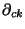

|
You are here : Control System Design - Index | Book Contents | Appendix B | Section B.2 B. Smith-McMillan FormsB.2 Polynomial matricesMultivariable transfer functions depend on polynomial matrices. There are a number of related terms that are used. Some of these are introduced below: Definition B.1 A matrix is a polynomial matrix if pik(s) is a polynomial in s, for and Definition B.2 A polynomial matrix
Definition B.3 An elementary operation on a polynomial matrix is one of the following three operations
Definition B.4 A left (right) elementary matrix is a matrix such that when it multiplies from the left (right) a polynomial matrix, then it performs a row (column) elementary operation on the polynomial matrix. All elementary matrices are unimodular. Definition B.5 Two polynomial matrices and are equivalent matrices, if there exist sets of left and right elementary matrices, and respectively such that
Definition B.6 The rank of a polynomial matrix is the rank of the matrix almost everywhere in s. The definition implies that the rank of a polynomial matrix is independent of the argument. Definition B.7 Two polynomial matrices and , having the same number of columns (rows), are right (left) coprime if all common right (left) factors are unimodular matrices. Definition B.8 The degree  ( ) of the kth column (row) ( ) of a polynomial matrix is the degree of highest power of s in that column (row). Definition B.9 A polynomial matrix is column proper if
has a finite, nonzero value. Definition B.10 A polynomial matrix is row proper if
has a finite, nonzero value. |